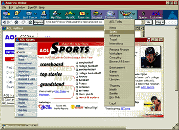
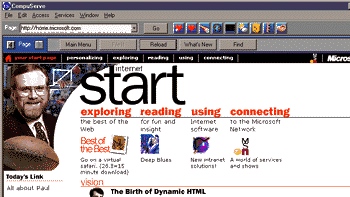
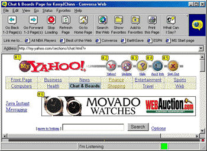
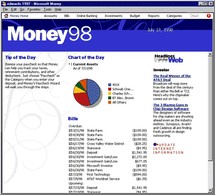
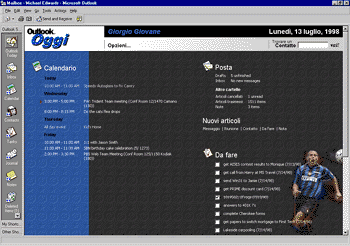

|
| ||
|
| ||
Michael Edwards
Developer Technology Engineer
Microsoft Corporation
Scott Roberts
Developer Support Engineer
Microsoft Corporation
July 30, 1998
Contents
Introduction
Create Your Own Browser Based on the WebBrowser Control
Advantages to Using the WebBrowser Control
Browser Applications that Reuse the WebBrowser Control
Create User Interfaces with the WebBrowser Control
Advantages to Using the WebBrowser Control
Web Editing and Publishing Tools that Reuse the WebBrowser Control
Deploy Your Application with the Internet Explorer Administration Kit
What Will the Future Bring?
Summary
In the furor over Netscape's release of the Navigator source code, Microsoft's customization options for Internet Explorer often get short shrift. This article discusses how you can reuse Internet Explorer's WebBrowser control in your own applications, both as a platform for building your own browser implementation or, as we feel will become increasingly popular, the user interface for a "traditional" application.
The WebBrowser control is the main browsing component used by Internet Explorer. The advantage to starting with the WebBrowser control, instead of building your own browser completely from scratch, is the ability to focus your development on the features you want to add. Create Your Custom Browser with the WebBrowser Control discusses these advantages in greater detail.
As the Internet and its associated software infrastructure evolve, developers are discovering the power of HTML, script, and Internet Explorer's Document Object Model to handle parts of their application's user interface. The WebBrowser control offers these developers the ability to mix and match HTML user-interface elements with traditional Win32 user interface features. We discuss this emerging trend in Create User Interfaces with the WebBrowser Control.
Finally, anytime you base a product on the WebBrowser control, you will need the Internet Explorer Administration Kit (IEAK) to deploy the Internet Explorer components. We discuss this in Deploy Your Application with the Internet Explorer Administration Kit.
Do you need to integrate Web browsing into your application, but don't want to learn every little browser programming nut and bolt? After all, you want to spend your time implementing your great ideas, not reinventing the wheel, right? Microsoft anticipated this desire with Internet Explorer 3.0, where it developed a set of Internet Explorer components you can use in your application. The main browsing component is the WebBrowser control.
Advantages of Reusing the WebBrowser Control
Customizable user interface. Many developers create their own browser application to provide different menus, toolbars, and other user-interface elements unavailable in existing browsers. The WebBrowser control can generate these elements for them, and there is all kinds of support available (for example, the Edit menu is pretty much the same in all Windows applications, and is very easy to access with the WebBrowser control).
Extensibility. The WebBrowser control allows you to customize what users see when they view Web content in your application. When you take advantage of the WebBrowser control's advanced hosting capabilities, you can customize the user-interface elements that appear inside the control on the HTML content itself. For example, you can:
Compliance with standards. The Web, as you know, is shaped by many different standards: sending data, rendering HTML, and accessing HTML elements from JavaScript, Visual Basic, and other programming languages. These standards are constantly evolving, and it is a huge amount of work simply to track and implement updates, never mind introduce brand-new features. A key focus for Microsoft's entire Internet Explorer product team is to ensure that our browser technology adheres to WWW standards. When you reuse the WebBrowser control, you leverage all that standards work.
Compatibility. We refer to two types of compatibility. First, you get guaranteed compatibility with content created for all WebBrowser-based browsers (which by definition includes Internet Explorer). Lots of Web page authors make their pages shine in Internet Explorer; when you reuse the WebBrowser control, they shine in your application, too. Second, backward compatibility with previous versions of Internet Explorer (and other browsers) is a top priority of the Internet Explorer team, which means that customers who use your WebBrowser-based application can upgrade their Internet Explorer components without "breaking" your application. For example, if your application hosted the Internet Explorer 4.0 WebBrowser control, and your customer upgraded their browser to Internet Explorer 5, your application will still work.
Of course, all that "old" Web content will continue to shine when customers upgrade their Internet Explorer components. And when your customers upgrade to future versions of Internet Explorer, they can view Web sites that take advantage of new content features -- even if you haven't released a new version of your application!
Many publicly available browser applications are based on the Microsoft WebBrowser control. If you don't believe me, look for Internet browser shareware on any of the major search sites (Infoseek  is one place to look). A number of companies sell WebBrowser-based products that offer meaningful, patentable ideas that enhance the browsing experience. Many major Internet Service Providers (ISPs) also provide WebBrowser-based browsers for free.
is one place to look). A number of companies sell WebBrowser-based products that offer meaningful, patentable ideas that enhance the browsing experience. Many major Internet Service Providers (ISPs) also provide WebBrowser-based browsers for free.
Both America Online (AOL)  and CompuServe
and CompuServe  originally developed proprietary browsers, which is understandable since they were in business long before Internet Explorer 3.0 and the WebBrowser control were released. But they were concerned about the amount of time and money they were spending developing and supporting them.
originally developed proprietary browsers, which is understandable since they were in business long before Internet Explorer 3.0 and the WebBrowser control were released. But they were concerned about the amount of time and money they were spending developing and supporting them.
AOL and Compuserve don't make money, though, by shipping a browser. They each started using the WebBrowser control because it allowed them to create a custom user interface that was fairly close to their proprietary offerings. And, of course, it allowed them to refocus most of their programming talents on content and services -- their bread and butter.



For documentation about reusing the WebBrowser control in your application, check out the Reusing Browser Technology topic in the MSDN Online Web Workshop.
Why would anybody building a non-Internet application want to reuse Internet Explorer components? To save time, money, and developer resources. The standards and features included with Internet Explorer provide a viable user-interface development platform on their own, even if the end user of your application never goes online. Here is a short list of the advantages to using DHTML and the WebBrowser control in traditional application development.
Advantages to Using the WebBrowser Control
You can take advantage of the WebBrowser control to make more efficient use of your technical-development and user-interface teams. If you find this idea intriguing, try and think about what visual aspects of your product can be presented using HTML, and how that presentation incorporates your application's data. The main advantage of an HTML-based user interface derives from allowing your user-interface specialists to do more than provide mockups and prototypes -- they can actually deliver the final product.
For example, generating a dialog in HTML can be as simple as passing a URL to the ShowHTMLDialog function exported by mshtml.DLL. You can even pass parameters just as you would with a "real" Win32 dialog. In this way, the entire dialog can be developed by the same UI people who would normally just provide mock-ups or prototypes.
You can also present your application's internal data in a more integrated fashion. In other words, not just a dialog, but some fundamental piece of your user interface. To accomplish this, your technical development team works with the user interface team to determine what types of internal data need to be accessed. You then build the necessary application data wrappers using standard component development technologies. With a little up-front work, your user-interface team is free to iterate their content presentation ideas without further affecting your developers.
Once you have started down the path of reducing dependencies between the developers and content creators, you can start realizing other benefits. For example, the user interface team can develop and test content ideas earlier in the product cycle (before they have the first alpha application drops from the development team) by using their favorite HTML editing tools.
When the WebBrowser control is used to present your content, you get all the other display characteristics of HTML: hyperlinks, window scrolling, rich-text display, style sheets (including layering and positioning support), even printing.
In addition to the extensibility issues discussed earlier, when you control the content output by your application, you gain additional benefits. First, you can easily incorporate any of the large number of ActiveX controls created by Microsoft and other third-party developers. You also have a straightforward way to add content from other partners.
The WebBrowser control is localized for 25 languages in 31 countries, which means that the parts of your user interface that are implemented in HTML can be localized without changing any of your program code. Of course, localizing the content is not a trivial matter, but if you avoid absolute positioning, the flow-oriented nature of the content is much easier to deal with than the dialogs and other user-interface elements of traditional Win32 applications. In addition, you only need to localize for one browser, a far cry from the effort you would have to expend to adapt an Internet site that supports several browsers.
End-user Applications Reusing the WebBrowser Control
Several "traditional" (non-Internet) applications directly incorporate HTML and the WebBrowser control. In so doing, they saved time and development resources, and even managed to expand the functionality of the products themselves.
Microsoft Money 98. When users launch Money 98  for the first time, some people will recognize the home screen as an HTML page. It integrates individualized financial summaries (based on your account information) with live financial news and information from Web venues, such as Money Insider
for the first time, some people will recognize the home screen as an HTML page. It integrates individualized financial summaries (based on your account information) with live financial news and information from Web venues, such as Money Insider  . The rich-text and scrolling advantages gained from HTML are evident in the New User tours, the monthly reports, and the goal planner views. And when you print pages from any of these areas, Money uses the WebBrowser control to do it.
. The rich-text and scrolling advantages gained from HTML are evident in the New User tours, the monthly reports, and the goal planner views. And when you print pages from any of these areas, Money uses the WebBrowser control to do it.
In addition to accessing the Internet to pay bills and download statements or stock quotes, Money 98 allows its banking and investment partners direct access to users through its online banking feature.

Microsoft Outlook 98. Outlook Today is a one-screen summary of appointments, tasks, mail, and a contact-search feature in Outlook 98  . It was built with the WebBrowser control. Outlook's developers created a Data Source Object (DSO) to take information from the Calendar, Inbox, Tasks, and Contacts areas and display them on the Outlook Today "page" using <TABLE> elements and DHTML databinding. They also created a special "Outlook:" pseudo-protocol to access certain functions using hyperlinks. In short, the WebBrowser control generates a BeforeNavigate2 event before requesting the hyperlink URL. The Outlook team used C++ code to cancel the navigation event and bring up another function instead.
. It was built with the WebBrowser control. Outlook's developers created a Data Source Object (DSO) to take information from the Calendar, Inbox, Tasks, and Contacts areas and display them on the Outlook Today "page" using <TABLE> elements and DHTML databinding. They also created a special "Outlook:" pseudo-protocol to access certain functions using hyperlinks. In short, the WebBrowser control generates a BeforeNavigate2 event before requesting the hyperlink URL. The Outlook team used C++ code to cancel the navigation event and bring up another function instead.

HTML Help. HTML Help replaces WinHelp. While Microsoft still supports and documents WinHelp in the Platform SDK, it was built in the days when "online help" meant "not printed." HTML Help is available as an SDK, supports integrated searching and indexing, and can convert your old WinHelp projects. It uses the WebBrowser control for rendering content and is very customizable (it's an Active Document container, after all).
For an example of a developer product that incorporates a customized look for HTML Help, check out the help files for the Visual J++ 6.0 Technology Preview  . For an example of an end-user product that uses HTML Help, check out the online help in Windows 98.
. For an example of an end-user product that uses HTML Help, check out the online help in Windows 98.
A number of HTML editing and publishing tools reuse the WebBrowser control. We won't go into a great deal of detail, but it is interesting to give a high-level perspective for how each of these tools uses Internet Explorer technologies.
Allaire HomeSite - HomeSite  is one of the most widely-used HTML editors on the market, and was also among the first to host the WebBrowser control. (They also use the Microsoft Win32 Internet functions for posting files to servers using FTP. They are also investigating the Microsoft Dynamic HTML Editing Component, and the Microsoft XML parser.)
is one of the most widely-used HTML editors on the market, and was also among the first to host the WebBrowser control. (They also use the Microsoft Win32 Internet functions for posting files to servers using FTP. They are also investigating the Microsoft Dynamic HTML Editing Component, and the Microsoft XML parser.)
Elemental Software Drumbeat - Drumbeat  is an end-user Web application tool that produces targeted content for Active Server Pages (ASP) and Internet Explorer. It hosts the WebBrowser control to preview pages, and parses HTML files using the Document Object Model.
is an end-user Web application tool that produces targeted content for Active Server Pages (ASP) and Internet Explorer. It hosts the WebBrowser control to preview pages, and parses HTML files using the Document Object Model.
ExperTelligence WebberActive - WebberActive  hosts the WebBrowser control to preview HTML content. It also uses COM and the Document Object Model to parse the HTML on the page in order to present properties, methods, and events. WebberActive has an incredible level of scripting support.
hosts the WebBrowser control to preview HTML content. It also uses COM and the Document Object Model to parse the HTML on the page in order to present properties, methods, and events. WebberActive has an incredible level of scripting support.
SoftQuad HoTMetaL Pro - HoTMetaL Pro  hosts the WebBrowser control to preview HTML pages, the Win32 Internet functions for FTP posting abilities, and extensive support for the Document Object Model.
hosts the WebBrowser control to preview HTML pages, the Win32 Internet functions for FTP posting abilities, and extensive support for the Document Object Model.
Deploy Your Application with the Internet Explorer Administration Kit
The Internet Explorer Administration Kit (IEAK) license allows you to deploy Internet Explorer components royalty-free and in 25 worldwide languages on Windows 95 and 98, Windows NT 3.51 and 4.0, Windows for Workgroups 3.11, Unix (Solaris 2.5 or higher), Macintosh 68K and PPC, and Windows CE. Deployment can be via floppies, CD-ROM, traditional servers, or the Web (Internet or intranet).
It's great that Internet Explorer is available on so many platforms, but unfortunately, you can only host the WebBrowser Control on Win32 systems that support COM. That means you can host the WebBrowser Control on Windows 95, Windows 98, Windows NT 4.0 and Windows 2000. That means you can't host the WebBrowser control on the Mac OS, Windows CE, Unix, Windows for Workgroups 3.11 and Windows NT 3.51.
If you reuse the WebBrowser control in your application, you can get a self-extracting executable from the IEAK that will install all the necessary Internet Explorer components automatically. You can even perform a "silent install" that won't replace the user's current browser or enable the Active Desktop -- in other words, other browser customers don't have to even know you installed some Internet Explorer pieces on their computer.
If you are building a browser application based upon the WebBrowser control, you might also be interesting in deploying e-mail (Outlook Express), and other IEAK components such as a custom dial-up utility and administrative features to configure security settings, proxies, and other browser settings.
Internet Explorer Administration Kit Home Page  .
.
Here's a link that discusses the issues involved in distributing and licensing WebBrowser technology.
We showed you a lot of cool ways that people are using the WebBrowser control, including some things you may not have thought of before. Even so, we have only seen the tip of the iceberg for the types of things you can do once you really start getting creative with this stuff. Some of these ideas might be considered wacky, but that's the way it works when you are dreaming up new ways to do things.
For example, Ken Levy in the Visual FoxPro group came up with a nifty idea using the AlwaysOnBottom property that is new for Visual FoxPro 6.0  forms. He just drops the WebBrowser control onto a FoxPro form of the same size, and maximizes the form with no border and no title. Then he sets FoxPro to load the form every time it boots, creating a sort of Web desktop for FoxPro. If you are into FoxPro, you may already have seen Ken's FoxPro site
forms. He just drops the WebBrowser control onto a FoxPro form of the same size, and maximizes the form with no border and no title. Then he sets FoxPro to load the form every time it boots, creating a sort of Web desktop for FoxPro. If you are into FoxPro, you may already have seen Ken's FoxPro site  that explores a number of ideas for using the WebBrowser control.
that explores a number of ideas for using the WebBrowser control.
Another interesting use of the WebBrowser control is an application called LandPro shown at the 1998 FoxPro DevCon conference. It's used to track Texas real estate in 3-D (you heard correctly, underground land rights). The front end to this application is created using Dynamic HTML in the WebBrowser control, again hosted in a Visual FoxPro form. They use the same techniques as we described for the "Outlook Today" view in Outlook 98, except the entire user interface for the application is Dynamic HTML in the WebBrowser control, with data supplied via FoxPro.
Another way that we might see the WebBrowser control used in future applications is creating something you could think of as "dynamic user interface", that is, user interfaces built entirely in real time. This is actually not too far removed from what we already see today with data binding, where the HTML is really sort of a template and the content is provided by binding data from an external source to HTML tags.
For documentation on reusing the WebBrowser control in your application, check out the Reusing Browser Technology topic on the MSDN Online Web Workshop.
Summary
Starting with the release of Internet Explorer 3.0, Microsoft also made available a royalty-free set of Internet Explorer components for developers, ISPs, and corporate MIS administrators. One of the coolest is the WebBrowser control, which handles all the chores of parsing and rendering Web pages. In this article we explained how reusing the WebBrowser control in your applications, even traditional, non-Internet applications, can save you time, money, and developer resources. We entertained two viewpoints -- one for people developing custom browser applications, and the other for people developing traditional Windows applications.
In the case of custom browser applications, we discussed how you can focus the bulk of your development on the features that make your browser special. For "traditional" applications we introduced the notion of using HTML for portions of your user interface as one way to streamline your development process. We closed with a brief discussion of the Internet Explorer Administration Kit, which you use to distribute you WebBrowser-based applications, and some thoughts on future scenarios a WebBrowser-based development process enables.
Whatever the development methodology, the WebBrowser control and its affiliated Internet Explorer components offer the ability to hit the ground running, focussing developers on the core value of the products they plan to deliver.
Did you find this material useful? Gripes? Compliments? Suggestions for other articles? Write us!
© 1999 Microsoft Corporation. All rights reserved. Terms of use.